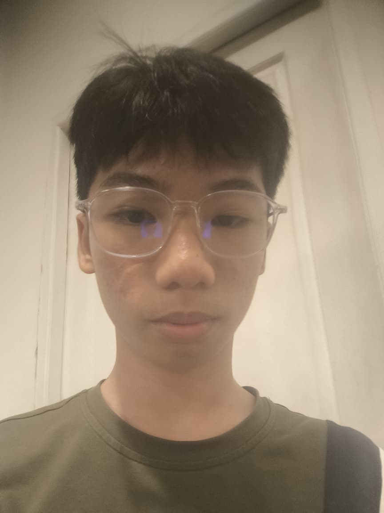

Halo , Saya Alexis Deccoryo
Siswa X TKJ 1, SMK Kristen Immanuel Pontianak
Hobi yang saya miliki adalah bermain game, hal tersebut sangat saya sukai dan saya lakukan pada waktu luang. Saya juga memiliki cita cita menjadi seorang developer website dan aplikasi.
Saya masuk jurusan TKJ ini karena saya tertarik dengan dunia teknologi. Terutama dalam membuat aplikasi meski saya tahu hal tersebut tidak mudah.